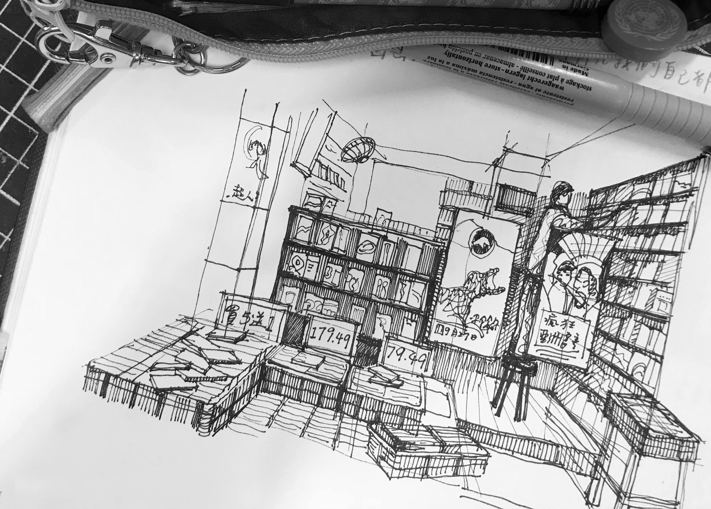

HOME
ABOUT
WORKS
LINES & LENS
A breathing trace through the lines
A steady stream of lines from my pocket sketchbook
A Journey of Cultural Exploration Through International Volunteer Work
Canson : XL : Croquis : Spiral Pad : 90gsm
Muji High Quality Paper Bind Plain Notebook

A living archive through the lens
Nikon FE, Canon 70D, GR IIIx
Barcelona I
Barcelona II
台灣查某囝
Berlin Memorial to the Murdered Jews of Europe
Salted Hideouts
Under Mediterranean Light
Under Continental Grey
In Soft Nihon Light
Bangkok
Faces Along the Way